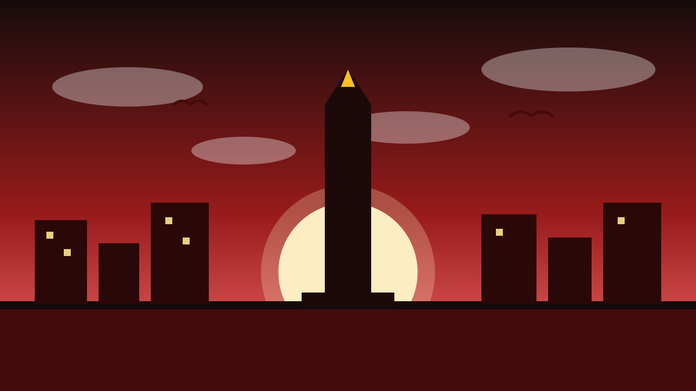

1 / 7

🏛️ NASIONAL
Batam Blackout Seharian, Warga Survival Mode
Batam gelap sejak Senin (12/10) pagi — listrik mati massal, sinyal hilang, air macet. Gimana kejadiannya? Geser →
2 / 7
⚡
Blackout Meluas Sejak 06.30 WIB
Gangguan sistem kelistrikan Batam-Bintan mulai Senin pagi sekitar pukul 06.30 WIB. Wilayah terdampak: Batam Center, Batu Aji, Tiban, Kabil, Nongsa, Bengkong, Sagulung, Sekupang, Kabupaten Bintan, sampai seluruh Tanjungpinang. Sistem kelistrikan Batam dan Pulau Bintan memang terhubung lewat kabel bawah laut.
3 / 7
🏭
Pabrik Dipulangkan, Air Ikut Mati
Sejumlah pekerja pabrik di kawasan Kabil, Nongsa dipulangkan karena operasional terganggu. Pekerja bernama Indah cerita: sampai di rumah listrik juga mati, air mati. Pemadaman juga ganggu distribusi air bersih karena pompa instalasi pengolahan air butuh listrik.
4 / 7
🚦
Lampu Merah Mati, Air Batam Kena Imbas
PT Air Batam Hilir melaporkan 7 IPAM (Sei Ladi, Harapan, Duriangkang, Muka Kuning, Nongsa, Tembesi, Piayu) dan 1 fasilitas booster terganggu — tekanan air mengecil hingga suplai berhenti sementara. Lampu lalu lintas mati di banyak persimpangan (Simpang KDA, Kaliban, Kabil, BI), memicu kemacetan dan pengaturan manual.
5 / 7
🔧
PLN Pulihkan Bertahap
PLN Batam mengerahkan tim teknis dan operasional untuk mencari titik gangguan dan memulihkan sistem bertahap. Manager Komunikasi PLN Batam Yoga Perdana Sulastama menyampaikan permohonan maaf dan bilang penyebab gangguan masih dalam investigasi. Prioritas diberikan ke fasilitas vital seperti rumah sakit dan pelayanan publik.
6 / 7
💬
Kata netizen
Di Threads dan Instagram, warga Batam rame bahas blackout hari ini — banyak yang nyebut lagi "survival mode", ada yang ngadem di mal (BCS, GB, DC Mall) karena di rumah panas dan gak ada sinyal, plus keluhan soal antrean dan ATM yang penuh. (Suara netizen — bukan fakta.)
7 / 7
🤔
Efeknya ke lo apa?
Buat lo yang kerja di kawasan industri, blackout sehari = produksi mandek dan rugi bisa miliaran. Buat anak kos: siapin power bank, air cadangan, dan jangan nyebarin rumor soal jam nyala listrik — tunggu info resmi PLN Batam.